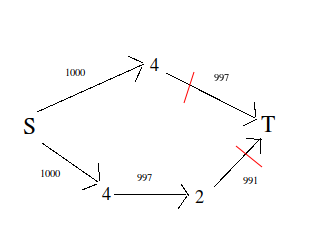
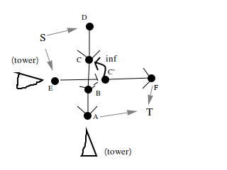

炮打司令部
假如炮塔的攻击路线可以相交怎么做？当然是直接取max。。。
也可以考虑用最小割的想法。
由于一个点可能被横纵向都扫一遍，所以这里考虑把点拆成横点和纵点。
把贡献不能共存（也就是在同一个炮塔的攻击范围）的点顺着方向连成一条链，边权设为贡献，我们会发现连成了若干条链。
这里就是认为每个炮塔都打满了，然后把打每个点的代价是beta狗的数量。
求一遍最小割，这样就是每条链上选代价最小的点出来，再用链的数量减去最小割就行了。
可以相交时样例的最小割()：

！ 以下部分需要异步阅读 ！
现在考虑不能相交的情况，根据题目我们能得到一些性质：
- 炮塔的攻击路线上没有炮塔
- 只有横向和纵向的两个炮塔才有可能冲突
怎么排除轨迹相交的情况？
网络流没法表示一个点选，另一个点就不能选
但是有方法表示一个点选其他点必须选（连过去不就是一种吗），可以转换
于是就可以想到染色啦
可以把炮塔打一个点看成选一条从炮塔到那个点的链。
一个割会把链和图分成和两部分，这里把割到集合定义为选中。
染色：
让横着的点选中表示炮弹要越过他（击中也算越过）
让横着的点选中表示炮弹没有越过他（击中也算越过）
定义炮击的链的部分是靠近Tower的那一边，这样的话竖的链就要转一下方向才满足染色需求。（到图里看！）
根据定义，竖边的权值是指向的点的权值，横边的权值是出发点的权值。
离炮塔最近的边（横：出发，竖：连向）设为1000，表示的是啥都不打需要的代价。
把上面的带到图中：

(把图片里其他地方看成空地，两个点看到一起，就可以构造出地图）
现在来排除两个炮塔的轨迹经过同一个点的情况。
其实就是横向竖连一条流量为的边。
为什么不连双向边?
这个图本身并不对称。
根据前面染色的定义会有：
横边向竖边连的意思是(横在集合时，竖也要在集合)：横边经过，竖边就不能经过
竖边向横边连的意思是(竖在集合时，横也要在集合)：竖边没经过，横边就必须经过
假设竖塔割了这条边，依然会有流量从竖流向横，导致横向炮塔一定越过，增加了不存在的限制
只要满足选时不选，就能满足,不能同时选的条件。
这时如果横向的炮经过了的话，竖一定会被归到集合（横是集合，不可被切断）
那就意味着到竖炮台()一定要有东西被切断，也就是说竖炮的轨迹不到
根据最小割,和以上的部分也不会再被割。
这样就说明只要横的轨迹经过交点，竖塔的轨迹就不会再碰那个交点，保证不会有相交。
满足限制，保证最优，跑最小割就好了。
code:
#include<iostream>
#include<cstdio>
#include<cstring>
const int N=2502,M=52;
int n,m,sum,fir[N<<1],cur[N<<1],dep[N<<1],mp[M][M];
struct edge{
int to,wi,nx;
}eg[N*6];
inline int nxi(){
int x=0;
char c;
while(((c=getchar())>'9'||c<'0')&&c!='-');
const bool f=c=='-';
f&&(c=getchar());
while(x=x*10-48+c,(c=getchar())>='0'&&c<='9');
return f?-x:x;
}
inline void add(const int a,const int b,const int v){
static int cnt=1;
eg[++cnt]=(edge){b,v,fir[a]};
fir[a]=cnt;
eg[++cnt]=(edge){a,0,fir[b]};
fir[b]=cnt;
}
inline void build(const int x,const int y){
static const int cx[]={0,-1,1,0,0},cy[]={0,0,0,-1,1};
const int fx=-mp[x][y];
if(fx<=2){
int tx=fx==1?1:n;
if(tx==x) return;
add(0,(tx-1)*m+y+N,1000-mp[tx][y]);
for(;tx-cx[fx]!=x;tx-=cx[fx]){
add((tx-1)*m+y+N,(tx-cx[fx]-1)*m+y+N,1000-mp[tx-cx[fx]][y]);
}
add((tx-1)*m+y+N,(N<<1)-1,1000);
}
else{
const int px=(x-1)*m;
int ty=y+cy[fx];
if(!ty||ty>m) return;
add(0,px+ty,1000);
for(;ty>1&&ty<m;ty+=cy[fx]){
add(px+ty,px+ty+cy[fx],1000-mp[x][ty]);
}
add(px+ty,(N<<1)-1,1000-mp[x][ty]);
}
sum+=1000;
}
inline bool dinic_bfs(){
static int que[N<<1];
int hd=0,tl=1;
memset(dep,0,sizeof(dep));
dep[0]=1;
while(hd!=tl){
const int x=que[hd++];
for(int i=cur[x]=fir[x];i;i=eg[i].nx){
const int y=eg[i].to;
if(eg[i].wi&&!dep[y]){
dep[y]=dep[x]+1;
que[tl++]=y;
}
}
}
return dep[(N<<1)-1];
}
int dinic_dfs(const int x,const int t){
if(x==(N<<1)-1) return t;
int tt=t,tp;
for(int &i=cur[x];i;i=eg[i].nx){
const int y=eg[i].to,v=eg[i].wi;
if(dep[y]==dep[x]+1&&v&&(tp=dinic_dfs(y,std::min(v,tt)))){
eg[i].wi-=tp;
eg[i^1].wi+=tp;
tt-=tp;
if(!tt) break;
}
}
return t-tt;
}
int main(){
#ifndef ONLINE_JUDGE
// freopen("a.in","r",stdin);
#endif
n=nxi(),m=nxi();
for(int i=1;i<=n;++i){
for(int j=1;j<=m;++j){
mp[i][j]=nxi();
}
}
for(int i=1;i<=n;++i){
for(int j=1;j<=m;++j){
if(mp[i][j]<0) build(i,j);
else{
const int cur=(i-1)*m+j;
add(cur,cur+N,1e8);
}
}
}
while(dinic_bfs()) sum-=dinic_dfs(0,1e8);
printf("%d\n",sum);
return 0;
}